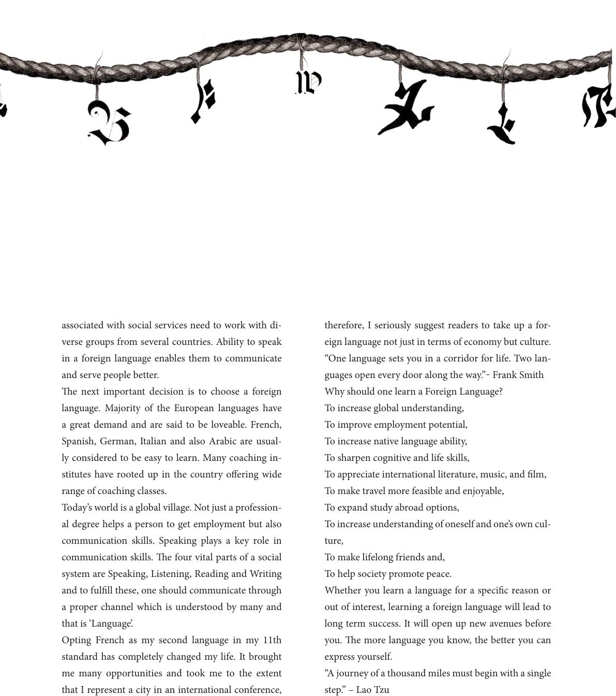

associated with social services need to work with di-
verse groups from several countries. Ability to speak
in a foreign language enables them to communicate
and serve people better.
e next important decision is to choose a foreign
language. Majority of the European languages have
a great demand and are said to be loveable. French,
Spanish, German, Italian and also Arabic are usual-
ly considered to be easy to learn. Many coaching in-
stitutes have rooted up in the country oering wide
range of coaching classes.
Today’s world is a global village. Not just a profession-
al degree helps a person to get employment but also
communication skills. Speaking plays a key role in
communication skills. e four vital parts of a social
system are Speaking, Listening, Reading and Writing
and to fulll these, one should communicate through
a proper channel which is understood by many and
that is ‘Language’.
Opting French as my second language in my 11th
standard has completely changed my life. It brought
me many opportunities and took me to the extent
that I represent a city in an international conference,
therefore, I seriously suggest readers to take up a for-
eign language not just in terms of economy but culture.
“One language sets you in a corridor for life. Two lan-
guages open every door along the way.”‒ Frank Smith
Why should one learn a Foreign Language?
To increase global understanding,
To improve employment potential,
To increase native language ability,
To sharpen cognitive and life skills,
To appreciate international literature, music, and lm,
To make travel more feasible and enjoyable,
To expand study abroad options,
To increase understanding of oneself and one’s own cul-
ture,
To make lifelong friends and,
To help society promote peace.
Whether you learn a language for a specic reason or
out of interest, learning a foreign language will lead to
long term success. It will open up new avenues before
you. e more language you know, the better you can
express yourself.
“A journey of a thousand miles must begin with a single
step.” – Lao Tzu